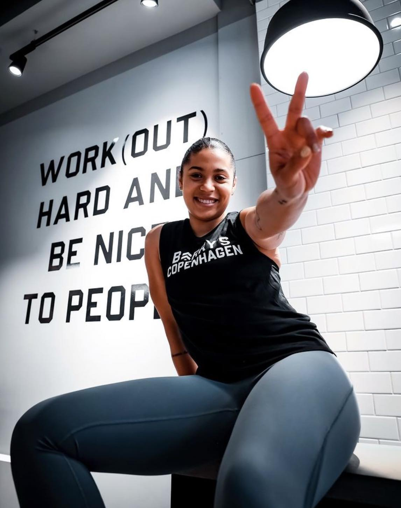
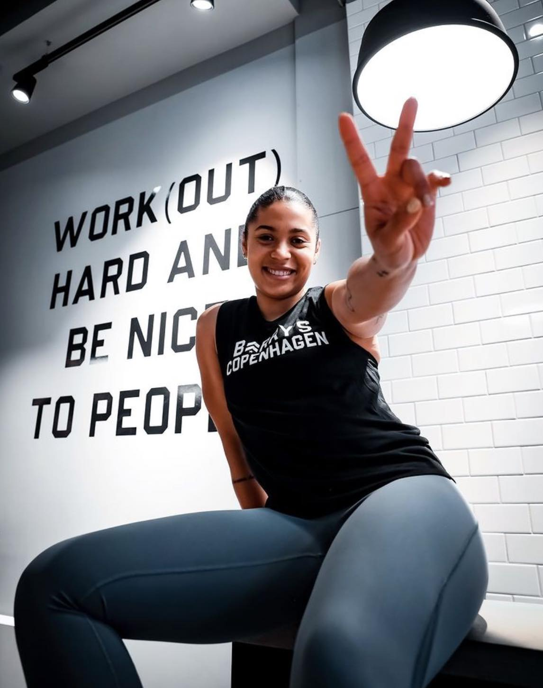

/rosalinje.png)
Mit navn er Jamilla og jeg har arbejdet som personlig træner de sidste 5 år og de første 3 år arbejdede jeg også som kostvejleder. Min mission er at motivere mennesker til at bevæge sig og få både en sund krop og et sundt sind. Jeg går meget op i at alt her i livet handler om balance og det er derfor også vigtigt for mig, at man ikke sætter for mange grænser for sig selv bl.a. også når det kommer til mad. Det handler blot om mængde, balance og sund fornuft.


- Personligtræner og instruktør
ved Gym Academy i London
- Master of Science I sportsernæring
from University of Westminister I
London
- Bachelor i ernæring og sundhed
fra Københavns Professionshøjskole
- FMS Functional Movement Screen
- EXOS Performance Specialist
 
